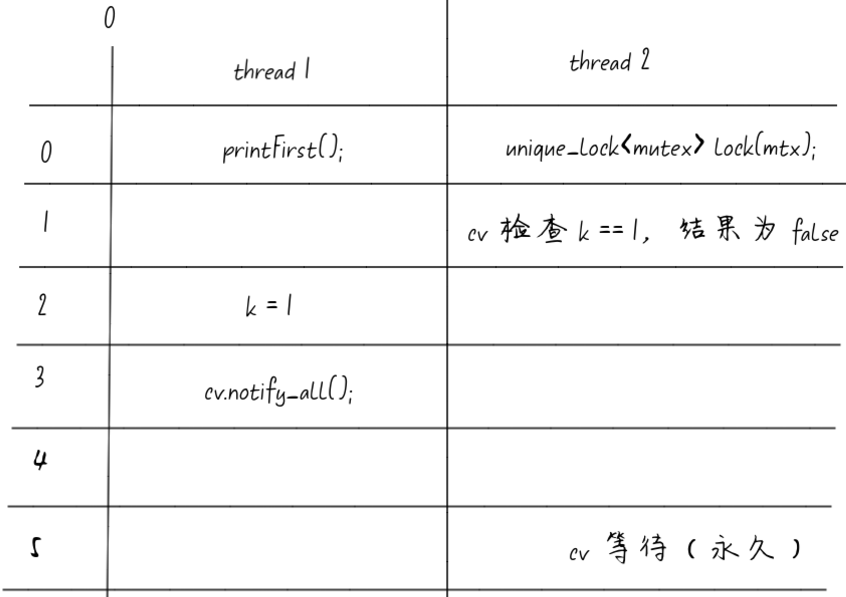

这篇笔记对C++条件变量的使用进行总结和一个需要注意的点。
总体概括：
C++的条件变量需要搭配一个lock加锁之后的互斥量使用，原因是需要将信号量的设置和对应信号的接收这两个操作作为原子操作执行。
condition_variable cv;
mutex mtx;
lock_guard<mutex> lock(mtx);
cv.wait(lock, []{return condition;})；
以下是在unix系统中使用pthread_cond信号量需要注意的点：
1、唤醒丢失
以下代码未使用条件判断，一旦消费者线程执行wait后未唤醒则会发生唤醒丢失。
std::mutex mutex;
std::condition_variable cv;
std::vector<int> vec;
void Consume() {
std::unique_lock<std::mutex> lock(mutex);
cv.wait(lock); // 等待条件变量
std::cout << "consume " << vec.size() << "\n";
}
void Produce() {
std::unique_lock<std::mutex> lock(mutex);
vec.push_back(1);
cv.notify_all(); // 通知所有等待的线程
std::cout << "produce \n";
}
下面的代码中函数first对共享变量k进行了修改，并进行了条件变量的通知，如何不适用锁进行
class Foo {
private:
std::condition_variable cv;
std::mutex mtx;
int k = 0;
public:
void first(std::function<void()> printFirst) {
printFirst();
k = 1;
cv.notify_all(); // 通知其他所有在等待唤醒队列中的线程
}
void second(std::function<void()> printSecond) {
std::unique_lock<std::mutex> lock(mtx); // 锁定 mtx
cv.wait(lock, [this]() { return k == 1; }); // 解锁 mtx，并阻塞等待唤醒通知，需要满足 k == 1
printSecond();
k = 2;
cv.notify_one(); // 随机通知一个(unspecified)在等待唤醒队列中的线程
}
void third(std::function<void()> printThird) {
std::unique_lock<std::mutex> lock(mtx); // 锁定 mtx
cv.wait(lock, [this]() { return k == 2; }); // 解锁 mtx，并阻塞等待唤醒通知，需要满足 k == 2
printThird();
}
};
可能会存在下面这种情况，导致k=1的修改永远无法被thread2获取到。

正确的做法是：
void first(std::function<void()> printFirst) {
// printFirst() outputs "first". Do not change or remove this line.
std::lock_guard<std::mutex> lock(mtx);
printFirst();
k = 1;
cv.notify_all(); // 通知其他所有在等待唤醒队列中的线程
}
通过加锁保证对共享变量和信号量的修改是一个原子不和分割的整体。
二、虚假唤醒
虚假唤醒是指线程在没有实际信号通知的情况下，从条件变量的等待中醒来的现象。这种现象可能由多种原因引起，包括：
竞争条件：在条件变量发出信号后，有可能其他线程先于等待线程运行，改变了条件。
多处理器系统：在一些系统上，特别是多处理器系统，多个等待线程可能会被同时唤醒。
系统错误：某些操作系统实现可能在没有信号发出时也允许条件变量从等待中返回。
为了处理虚假唤醒，线程在从条件变量的等待中醒来后，应始终检查它所等待的条件是否满足。如果条件不满足，线程应继续等待条件变量。
std::condition_variable cv;
std::mutex mx;
bool ready = false; // 标志变量，表示工作是否准备好
void thread1() {
while (true) {
// 模拟做一些工作
std::this_thread::sleep_for(std::chrono::seconds(1));
std::unique_lock<std::mutex> lock(mx);
ready = true; // 工作准备好
cv.notify_one(); // 唤醒一个等待的线程
}
}
void thread2() {
while (true) {
std::unique_lock<std::mutex> lock(mx);
// 处理虚假唤醒
while (!ready) {
cv.wait(lock);
}
// 工作已经准备好，进行处理
std::cout << "Thread2: Work is done." << std::endl;
ready = false; // 重置标志
}
}
while循环：在cv.wait(lock)之前使用while循环检查条件是否满足，而不是简单的if语句。这样可以确保线程在条件满足后才继续执行，避免了虚假唤醒的影响
eg、使用条件变量的wait接口可以等效于上述的循环处理，cv.wait(lock, []{return condition;})
三、小结
条件变量必须搭配互斥锁使用：条件变量和互斥锁通常一起使用，以确保线程安全地等待和通知。
尽可能使用 C++ 提供的带条件的条件变量形式：C++ 标准库提供了带条件的 cv.wait，可以直接使用 lambda 表达式来检查条件，避免虚假唤醒。
如果直接使用系统底层的条件变量，要注意唤醒丢失和虚假唤醒这两个坑：在使用底层条件变量时，必须手动处理虚假唤醒和唤醒丢失的问题。建议将底层条件变量封装成更高层次的抽象，以简化使用并减少错误。